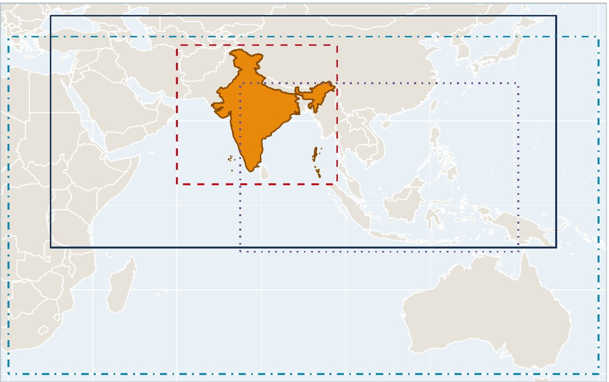

Doctoral thesis · Central University of Kerala
Status, Regions, and Rising Powers in the Emerging World Order
A case study of India. This companion walks through the theory, the four episodes, the maps and the tables, one piece at a time, so that you can follow the argument without reading 478 pages first.
Ravi Kumar · PhD, International Relations and Political Science · submitted 2026, viva awaited
Click and compare
Most figures respond: select a step, a cell, a year or a case and the explanation changes with it.
The thesis’s own maps and tables
The three maps are reproduced from the thesis. The tables are rebuilt as charts you can scrub.
A guide, not a copy
The text here is written fresh for readers. The thesis remains the authoritative account.
How to read it. If you only have five minutes, read the argument, play with the matrix, and open the map of the four frames.
Start
The argument in brief
India has spent eight decades redrawing the region around itself, and each attempt has paid off only up to a point.
The thesis starts from a puzzle. Across four episodes India invested in reshaping the region it belongs to, grew more skilful at it each time, and still saw the recognition it gained stop short of what it sought.
Its answer is Regional Status Theory. A state that sees a gap between its capabilities and the standing it is given can change who it is compared with, what the comparison rewards, or which institutions do the ranking. Which route it chooses depends on how it reads the hierarchy it faces.
The central question. How do rising powers use regional re-engineering as an instrument of status-seeking, what shapes their choice among expansive, contractive and hedging strategies, and what bounds the returns each can deliver?
1. Motive. How has India’s perceived status deficit shaped its regional strategies across the post-independence period?
2. Choice and returns. What explains the shifts between mechanisms, and what determines what each returns?
3. Context. How does the world-order setting shape the incentive to re-engineer, and the limits on it?
Part one
The theory
The causal pathway
The theory is a chain with a loop. Select a box, or press Play to walk the whole chain.
Figure · the RST causal pathway
The openness–legitimacy matrix
This is the theory’s predictive core. Two perceptions, whether the hierarchy is open to you and whether its standards are fair, select the strategy. The four Indian cases are plotted where the thesis coded them.
Figure · the matrix with the four cases plotted
Mechanisms and tools
Three mechanisms. Expansive widens the frame to include more. Contractive narrows it to a smaller group the state can shape. Hedging spreads commitments across several groupings.
Three instruments. Geographic expansion redraws the boundary. Normative rebranding changes the identity on offer. Institutional layering builds a parallel hierarchy. Every mechanism is carried out with some mix of these.
Part two
The evidence
Four frames on one map
The four episodes are not four moments inside one region. They are four different regions, each claimed by the same state within a single lifetime. Toggle the frames to see each one.
Map 1.1 · India’s four regional frames, 1947 to the present

Map reproduced from the thesis. Each rectangle is the approximate extent of the community India claimed to belong to and lead in that period, as the primary record articulates it. The extents are the author’s rendering, not the boundaries of any organisation.
The cases against world-order transitions
Three of the four episodes open inside a world-order transition. Drag the year slider to see where each case sits.
Figure · four episodes and the world-order eras (approximate)
Case files
The status deficit, year by year
The deficit is the gap between what India can do and the standing others grant it. Choose a benchmark year. Capability climbs, while the recognition columns stay stubbornly short.
Table 4.2 · India’s status-deficit profile at five benchmark years
Ranks for 1995–2024 are computed in the thesis from World Bank and SIPRI series. The 1950 PPP rank is a historical estimate.
The recognition ceiling
In the Look East case India climbed every institutional rung ASEAN offered, yet its position relative to China slipped. Two views of the same finding.
Table 4.3 · ASEAN trade, India against China
Two-way merchandise trade with ASEAN, US$ billion, from the ASEAN Secretariat series. India’s trade as a share of China’s falls from 25.3 per cent to 17.0 per cent even as India’s institutional standing in ASEAN rises.
Table 4.4 · when ASEAN placed China and India in its hierarchy
India entered ahead of China as a full dialogue partner, then fell behind on every later rung that ASEAN controlled: the goods agreement, the strategic partnership and the comprehensive strategic partnership, and later regional economic integration.
Five hypotheses against four cases
Each cell records the kind of support the case gives the hypothesis. The categories are not interchangeable and are not a score. Select a cell for its note.
Table 4.7 · cross-case hypothesis summary
One row needs a caveat. H1 is supported wherever re-engineering occurred, but because the design has no case of a deficit without re-engineering, it works as the condition that makes India a suitable case, not as a hypothesis the four cases test.
Part three
The result
What limits the returns
The cases force five modifications to the original theory. Four name conditions that cap what re-engineering can deliver. The fifth is about how the motive can be tested.
Reconstructive evidence
Where officials no longer say status is the aim, the motive must be inferred from a pattern of behaviour. That is a weaker standard than direct statements, and the thesis says so.
Ideational overcommitment
When a framework expresses a leader’s worldview, not a calculation, losses can follow that a status-maximiser would avoid. The 1962 war is the test.
Material asymmetry
Accession brings recognition only up to a ceiling set by the capability gap with the strongest rival in the same framework.
Structural resistance
Contraction relocates a status problem more than it solves it, because smaller neighbours resist the substitution of one framework for another.
Great-power polarisation
Hedging works only while the rival powers tolerate it, and it narrows as their rivalry sharpens.
Five findings
- Persistence. Regional re-engineering recurs across eight decades, under different governments and in different world-order moments.
- Windows. World-order transitions are the setting for India’s most ambitious attempts. The contractive turn is the exception, driven by conditions inside the regional framework.
- Prediction. The matrix predicts the form of re-engineering well, and the returns poorly.
- Motive. The status deficit is present in every episode and is the best available account of motive. The design cannot prove that it caused the behaviour.
- Contribution. The Indo-Pacific strategy has added identifiable elements to the regional order’s norms, short of authoring that order.
What the thesis does not claim
It is a plausibility probe of a theory built from the same record, and it does not confirm the theory.
It studies one country at elite level. Domestic politics and wider generalisation are left for later work.
No case sits in the closed-and-illegitimate cell, so that prediction is untested.
It does not attribute the spread of the term “Indo-Pacific” to India.
The conclusion sets out a comparative agenda: a negative case, comparative tests of the theory, domestic politics, gender, and digital re-engineering.
Reference
Chapter by chapter
1IntroductionPuzzle, questions, design, case selection
Sets out the persistence puzzle, the central question and three sub-questions, the research design and the case selection, and explains why a narrower question is the right first step.
2Theoretical overviewStatus, region-building, world order
Reviews the literatures on status, region-building and world order, takes the scepticism about status research seriously, and identifies the gap that RST is designed to fill.
3Regional Status TheoryPropositions, matrix, hypotheses, method
Presents the antecedents, the five propositions, the three instruments, the openness–legitimacy matrix, the five hypotheses and the process-tracing method with its two evidence standards.
4India’s regional re-engineeringFour cases and a synthesis
The four case studies, then a cross-case synthesis that yields the five modifications to the theory.
5ConclusionFindings, contributions, limits, future work
Summarises the argument, answers the research questions, states the findings and contributions, and discusses policy implications, limitations, falsifiability and future research.
A–BAppendicesCoding protocol and source corpus
A: the openness–legitimacy coding protocol. B: the primary-document corpus used in each evidence regime.
Reference